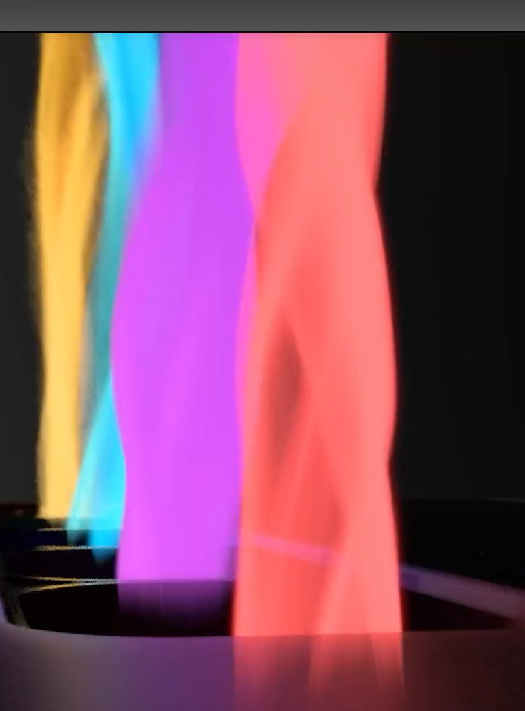
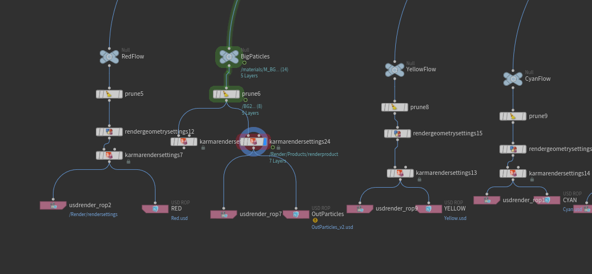

← 部落格 × Harbour × ETC


第 9 周
团队成员
Yiqi Zheng（特效）
Riley Ho（特效）
Itim Kongsakulvatanasook（特效）
Sofia Mancias（合成）
3 月 2 日
Benji Hopkins（外观开发）
SCAD × HARBOR × ETC － 第 9 周
大家好，这是我 SCAD × Harbor × ETC 部落格的第九周！
以下是周二简报后导师们的回馈。
Kyle：
-
镜头 1 的粒子是不是太饱和？
-
地面和印表机看起来很棒
-
镜头 2 降低饱和度
-
缺少景深和动态模糊
-
更神秘一点，藏起一些东西
-
镜头 3 的景深也可以收窄，能帮忙遮掉画作的低解析度
-
不确定最后一个镜头的暖光，也许更蓝一点
Beck：
-
木头非常亮
-
柔化木头上的凹凸
-
不应该那么暗，会让它看起来很 CG
-
剪接点很重要，让粒子在镜头 3 不要完全消失，再于镜头 4 收尾
Pheya：
-
第一个镜头的溢光和第二个镜头不一样
-
第一个镜头的溢光比第二个多，但第二个镜头更微距？
-
木头比较好了，但还是很光滑
-
看起来比较像塑胶
Molly：
-
如果最后一个镜头能看到一点粒子的痕迹会很酷，也许用雾
-
注意背景的闪烁
-
镜头 3 和 4 的摄影机运动感觉一样，应该更有推进感
Molly：
-
拿掉最后一个镜头的橘色，换成冷色光，并把所有灯光调暗 10%
待办事项：
-
算出高解析度静态图，并制作拆解与最终影片
这是我们第 9 周的预视。
这周镜头 1 我专注在优化外围的粒子，让它们和彩色流更融合。但结果视觉上不够强，所以我们决定拿掉，让构图更干净。
镜头 2 我优化了色彩流，减少平面感，并加入更多体积深度来加强立体感，尤其是原本看起来很平的粉红和洋红区域。

算图：
镜头 1 我们拆成九个图层，让 Sofia 在调色时能更好地控制地面阴影。

算图的部分，我们把镜头 2 拆成九个图层，让 Sofia 调色时有更多控制。我也把印表机的墨水槽分开算，并加强它们的颜色，避免看起来像黑洞或和场景其他部分脱节。